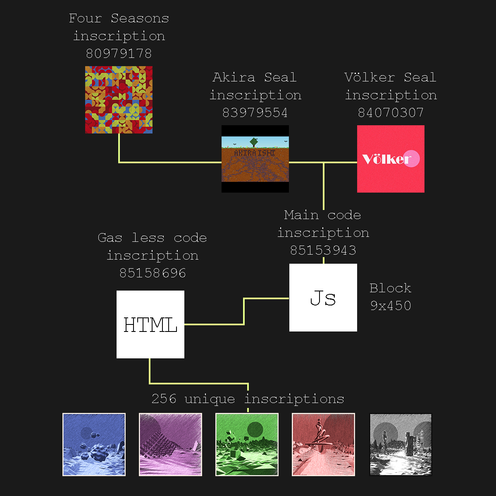

WE NEED VOLUNTEERS
CONNECT YOUR MIND
Thanks only to human creativity and resourcefulness
(totally not
Alien
technology)
A groundbreaking algorithm, capable of uncovering alien structures far across the Universe, was created by a team of Top-Tier scientists.
Through the power of Human mind and the blockchain, the user can simply interact with the
to take their own snapshot of outer Space.
-- The procedure is now 100% painless --
Are you an explorer of the unknown? You too can JOIN NOW
We have discovered 15 type of subjects grouped in 4 main factions (type P being the oldest and more advanced), but we know there is up to 20. Be sure to contact our organization with relevant information so we can update our Data, the pioneers that discover a new subject can be immortalized here and later on the blockchain forever.
Provenance matters, that's why we used Parent-child effectively while making sure to reduce gas cost. The main project is also inscribed on a Block9x450 Sat, as a way to represent the start of a journey, exploring and discovering the unknown and traveling together into Time, the Universe, and its wonders.

Akira Ishi
Code,
Concept,
Video,
Website
Völker
Code creator,
Initiator,
More Code
01100100 01101001 01110011 01100011 01101111 01110110 01100101 01110010 01111001